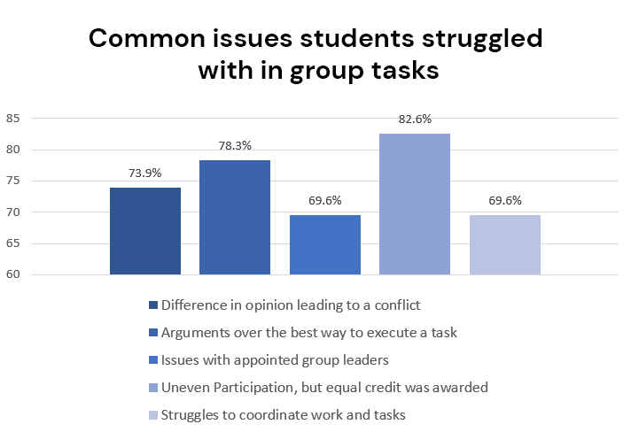

Introduction to Conflict Resolution

Group tasks
Group tasks are a pretty big part of our school years. There are a lot of times
students are grouped up may it be for assignments or planning events. Participating in
group tasks can improve one's communication and social skills and makes them better at
collaboration. Working as a group, even for a small assignment, can expose a student
to multiple new ideas and perspectives, and some students may even find that they
learn things faster when fellow students help them.
With social media and platforms like Zoom, Google Meet or file-sharing platforms like
Google Docs and Google Slides, students are finding it easier to collaborate and
learn together. Group tasks are not only helpful but they can be really fun as well,
especially when you work with your peers; you get to be productive while hanging out
with your friends!
Benefits of Group Tasks
- Group tasks improve one's collaboration and communication skills
- They expose students to new perspectives and outlooks
- Students may find it easier to learn in group settings
- They enhance student's critical thinking skills
- It teaches students to delegate tasks and manage their responsibilities effectively
Causes of conflict in group tasks
Group tasks are really helpful, but with all things in life, there are certain issues
students can face while participating in group tasks. The nemesis of productivity -
conflicts.
Conflicts are just disagreements between 2 or more parties. They can be physical or verbal,
but either way, they're a nuisance, especially in group tasks. Petty arguments and
disagreements can waste a lot of valuable time, and affect the overall performance of
the group.
Some things that cause conflicts in groups are
- Uneven participation, but still being awarded equal credit
- Issues with appointed group leaders
- Other preexisting conflicts (e.g. 2 people who just REALLY hate each other in one group, yikes)
- Differences in opinion and perspective
- Disagreements over how to execute the task, which can be caused by lack of information about the task
- Grouphate - Dislike towards working in a group and lacking the motivation to participate
Results from a short survey in my grade
Importance of dealing with conflicts effectively
As mentioned previously, conflicts are just unecessarily time consuming and could
lead to petty insults and arguments or could even escalate as far to physical conflicts.
No one should have to lose their chance at a good grade or performance just because of
chaos in a group. Which is why, learning conflict resolution skills is really important.
If students know how to deal with fights independently they can work more efficiently
and communicate with their group mates better.
Conflict resolution skills won't only help at school, but in any situation where stuff's
going down. It can prove to be really useful in corporate settings, because good conflict
management skills are viewed as a big part of being a good leader, so managers especially
require good conflict managemen skills
But, you can think about all that later, right now, you should focus on getting those
two group members to stop bickering about who's right and finish your assignment!
How can you deal with them
If you're a student trying to finish a group task having an argument with a
fellow group member, or you're just a poor bystander who has to witness
your assignment go up in flames, this is the place for you.
Check out some conflict resolution tips for students!
Read More...

Has your classroom become a battlefield? are your students yelling, arguing
and are seemingly forgetting that the point of school is not to bicker but
to learn? If you're a teacher in a warzone of a classroom, check out some
of these Conflict resolution tips for teachers!
Read More...
Are you having a fight, but can't seem to have a constructive conversation
with everyone elese involved? Or are the tensions in your group task on the
rise and you need to tone it down before it escalates? Here are a few conflict
resolution games and activities to help!
Read More...
Struggling to find the best method to deal with your conflict?
Well, Kenneth W. Thomas and Ralph Kilmann foresaw this, and have the
perfect solution! Check out the Thomas-Kilmann Conflict Mode Instrument
and the 5 modes one can use to deal with conflict!
Read More...